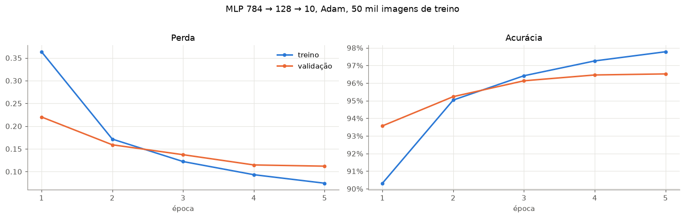
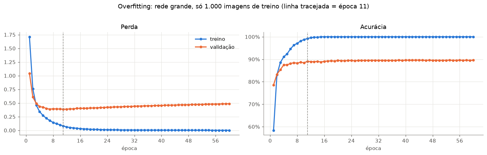
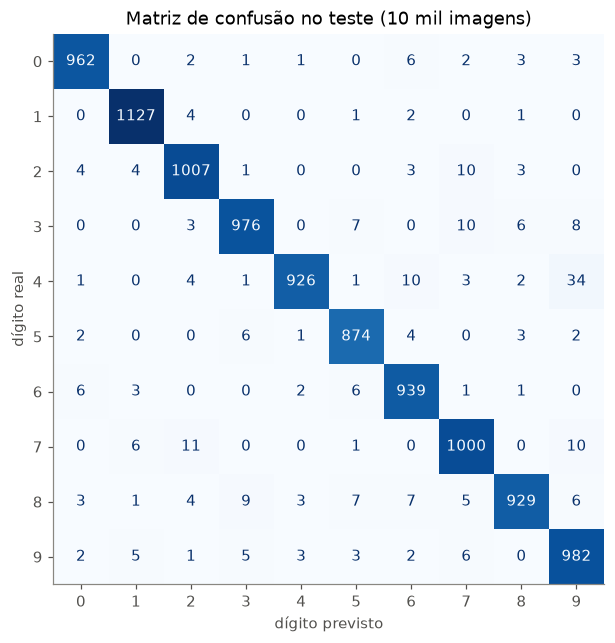
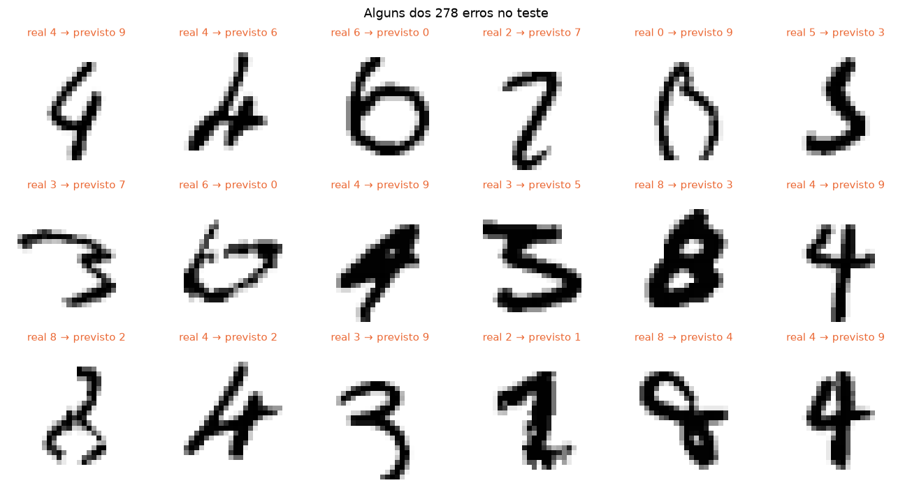
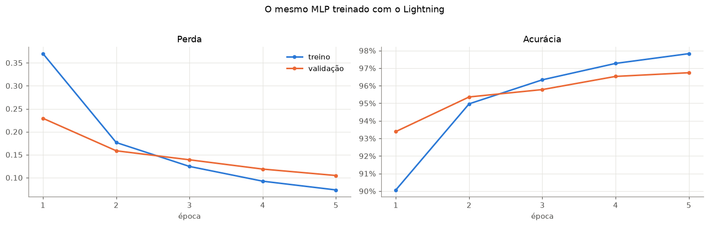

Code
# no Google Colab, o PyTorch já vem instalado; o Lightning não
import sys
if "google.colab" in sys.modules:
!pip install -q lightningLink Colab

Nas aulas 1 a 3 vimos cada peça separada: a rede (função), a perda, o backward() e o otimizador. Hoje montamos o pipeline completo, do dado bruto até o modelo treinado e avaliado, do jeito que se faz em projetos de verdade:
Dataset e DataLoader: como o PyTorch entrega os dados para a rede# no Google Colab, o PyTorch já vem instalado; o Lightning não
import sys
if "google.colab" in sys.modules:
!pip install -q lightningimport time
import warnings
import numpy as np
import pandas as pd
import matplotlib.pyplot as plt
import torch
import torch.nn as nn
import torch.nn.functional as F
from torch.utils.data import Dataset, DataLoader, Subset, random_split
from torchvision import datasets, transforms
from sklearn.metrics import confusion_matrix, ConfusionMatrixDisplay
# cores e estilo dos gráficos (as mesmas das aulas de Machine Learning)
AZUL, LARANJA, VERDE, CINZA, TINTA = "#2a78d6", "#eb6834", "#1baf7a", "#898781", "#52514e"
plt.rcParams.update({
"axes.spines.top": False, "axes.spines.right": False,
"axes.edgecolor": CINZA, "axes.labelcolor": TINTA,
"xtick.color": TINTA, "ytick.color": TINTA,
"axes.grid": True, "grid.color": "#e6e5e1", "figure.dpi": 110,
})
torch.manual_seed(42)
# CPU é mais rápida que a GPU do Mac (MPS) para uma rede tão pequena; no Colab com GPU, usamos CUDA
DEVICE = "cuda" if torch.cuda.is_available() else "cpu"
DEVICE'cpu'Dataset: como pegar uma amostraUm Dataset do PyTorch é qualquer objeto que saiba responder duas perguntas:
__len__: quantas amostras existem?__getitem__(i): qual é a amostra número i? (devolve a entrada e o rótulo)Só isso. Para entender, vamos escrever o nosso próprio Dataset a partir dos arrays brutos do MNIST (imagens em uint8, de 0 a 255):
mnist_bruto = datasets.MNIST(root="data", train=True, download=True)
print(f"imagens: {tuple(mnist_bruto.data.shape)} {mnist_bruto.data.dtype} rótulos: {tuple(mnist_bruto.targets.shape)}")
class DigitosDataset(Dataset):
def __init__(self, imagens, rotulos):
self.imagens = imagens # (N, 28, 28), uint8 de 0 a 255
self.rotulos = rotulos # (N,)
def __len__(self):
return len(self.rotulos)
def __getitem__(self, i):
x = self.imagens[i].float().div(255).unsqueeze(0) # (1, 28, 28), float de 0 a 1
y = self.rotulos[i]
return x, y
meu_dataset = DigitosDataset(mnist_bruto.data, mnist_bruto.targets)
x0, y0 = meu_dataset[0]
print(f"len = {len(meu_dataset)} amostra 0: x {tuple(x0.shape)}, y = {y0.item()}")imagens: (60000, 28, 28) torch.uint8 rótulos: (60000,)
len = 60000 amostra 0: x (1, 28, 28), y = 5O datasets.MNIST do torchvision que usamos nas aulas anteriores é exatamente isso: uma classe com __len__ e __getitem__, mais o download e o transform (ToTensor() faz a mesma conversão de 0–255 para 0–1). Daqui em diante usamos a versão pronta:
treino_completo = datasets.MNIST(root="data", train=True, download=True, transform=transforms.ToTensor())
teste = datasets.MNIST(root="data", train=False, download=True, transform=transforms.ToTensor())
x_tv, y_tv = treino_completo[0]
print(f"mesma amostra? {torch.equal(x_tv, x0) and y_tv == y0.item()}")mesma amostra? TrueDataLoader: lotes e embaralhamentoO Dataset entrega uma amostra por vez; o DataLoader junta várias em um lote (batch) e, se pedirmos, embaralha a ordem a cada época. Embaralhar evita que a rede veja sempre a mesma sequência (por exemplo, todos os “0” juntos), o que atrapalharia a descida do gradiente estocástica.
carregador = DataLoader(treino_completo, batch_size=64, shuffle=True)
x_lote, y_lote = next(iter(carregador))
print(f"um lote: x {tuple(x_lote.shape)} y {tuple(y_lote.shape)}")
print(f"lotes por época: {len(carregador)} (60000 / 64, arredondado para cima)")
print(f"\nrótulos do 1º lote, 1ª vez: {next(iter(carregador))[1][:12].tolist()}")
print(f"rótulos do 1º lote, 2ª vez: {next(iter(carregador))[1][:12].tolist()} ← nova ordem a cada época")um lote: x (64, 1, 28, 28) y (64,)
lotes por época: 938 (60000 / 64, arredondado para cima)
rótulos do 1º lote, 1ª vez: [9, 9, 4, 7, 7, 9, 4, 7, 9, 1, 7, 5]
rótulos do 1º lote, 2ª vez: [6, 4, 7, 6, 7, 8, 8, 1, 3, 6, 7, 9] ← nova ordem a cada época| Conjunto | Tamanho | Para que serve | Quantas vezes usamos |
|---|---|---|---|
| Treino | 50.000 | ajustar os pesos (backward() + step()) |
a cada passo |
| Validação | 10.000 | acompanhar o treino e escolher hiperparâmetros (lr, nº de épocas, tamanho da rede) | a cada época |
| Teste | 10.000 | estimar o desempenho em dados novos | uma única vez, no final |
Se escolhermos hiperparâmetros olhando o teste, ele deixa de ser “dado novo” e a nota fica otimista (a mesma ideia de data leakage da aula de ML supervisionado).
O MNIST já vem com um teste separado (10 mil imagens). Separamos as 60 mil de treino em 50 mil + 10 mil com random_split. Aqui um sorteio aleatório é adequado porque as imagens são independentes entre si. Na aula da balneabilidade, com dados temporais, precisávamos separar pelo tempo.
gerador = torch.Generator().manual_seed(42) # divisão reprodutível
treino, validacao = random_split(treino_completo, [50000, 10000], generator=gerador)
carregador_treino = DataLoader(treino, batch_size=64, shuffle=True, generator=torch.Generator().manual_seed(0))
carregador_val = DataLoader(validacao, batch_size=1000) # sem embaralhar: a ordem não importa na avaliação
carregador_teste = DataLoader(teste, batch_size=1000)
print(f"treino: {len(treino)} validação: {len(validacao)} teste: {len(teste)}")treino: 50000 validação: 10000 teste: 10000Duas funções, que vamos reaproveitar até o fim da aula:
treina_uma_epoca: para cada lote, forward → perda → backward → step (o padrão da aula 3).avalia: calcula perda e acurácia sem treinar. Duas linhas novas:
modelo.eval() coloca a rede em modo de avaliação (desliga camadas que se comportam diferente no treino, como Dropout e BatchNorm; o nosso MLP não tem, mas é um hábito obrigatório). modelo.train() volta ao modo de treino.torch.no_grad() desliga o autograd: não vamos chamar backward(), então não precisamos registrar as operações. Fica mais rápido e gasta menos memória.def cria_mlp(escondida=128):
return nn.Sequential(nn.Flatten(), nn.Linear(784, escondida), nn.ReLU(), nn.Linear(escondida, 10))
def treina_uma_epoca(modelo, carregador, otimizador):
modelo.train() # modo de treino
soma_perda, acertos, total = 0.0, 0, 0
for x, y in carregador: # para cada lote...
x, y = x.to(DEVICE), y.to(DEVICE)
logits = modelo(x) # 1. forward
perda = F.cross_entropy(logits, y) # 2. perda
otimizador.zero_grad() # 3. zera gradientes
perda.backward() # 4. backward
otimizador.step() # 5. atualiza os pesos
soma_perda += perda.item() * len(y)
acertos += (logits.argmax(dim=1) == y).sum().item()
total += len(y)
return soma_perda / total, acertos / total
@torch.no_grad() # desliga o autograd na função inteira
def avalia(modelo, carregador):
modelo.eval() # modo de avaliação
soma_perda, acertos, total = 0.0, 0, 0
for x, y in carregador:
x, y = x.to(DEVICE), y.to(DEVICE)
logits = modelo(x)
soma_perda += F.cross_entropy(logits, y, reduction="sum").item()
acertos += (logits.argmax(dim=1) == y).sum().item()
total += len(y)
return soma_perda / total, acertos / totaltorch.manual_seed(0)
modelo = cria_mlp().to(DEVICE)
otimizador = torch.optim.Adam(modelo.parameters(), lr=1e-3)
EPOCAS = 5
historico = []
inicio = time.time()
for epoca in range(1, EPOCAS + 1): # para cada época...
perda_tr, acc_tr = treina_uma_epoca(modelo, carregador_treino, otimizador)
perda_val, acc_val = avalia(modelo, carregador_val)
historico.append({"época": epoca, "perda treino": perda_tr, "perda validação": perda_val,
"acurácia treino": acc_tr, "acurácia validação": acc_val})
print(f"época {epoca}: perda treino = {perda_tr:.3f} perda val = {perda_val:.3f} "
f"acc treino = {acc_tr:.2%} acc val = {acc_val:.2%}")
print(f"\ntempo total: {time.time() - inicio:.0f} s")
historico = pd.DataFrame(historico).set_index("época")época 1: perda treino = 0.364 perda val = 0.220 acc treino = 90.32% acc val = 93.57%
época 2: perda treino = 0.172 perda val = 0.159 acc treino = 95.04% acc val = 95.23%
época 3: perda treino = 0.122 perda val = 0.137 acc treino = 96.42% acc val = 96.13%
época 4: perda treino = 0.093 perda val = 0.115 acc treino = 97.26% acc val = 96.46%
época 5: perda treino = 0.075 perda val = 0.112 acc treino = 97.78% acc val = 96.52%
tempo total: 5 sdef plota_curvas(hist, titulo, marca=None):
fig, axes = plt.subplots(1, 2, figsize=(13, 4))
for ax, metrica in zip(axes, ["perda", "acurácia"]):
ax.plot(hist.index, hist[f"{metrica} treino"], color=AZUL, lw=2, marker="o", ms=4, label="treino")
ax.plot(hist.index, hist[f"{metrica} validação"], color=LARANJA, lw=2, marker="o", ms=4, label="validação")
if marca is not None:
ax.axvline(marca, color=CINZA, ls="--", lw=1)
ax.set(xlabel="época", title=metrica.capitalize())
ax.xaxis.set_major_locator(plt.MaxNLocator(integer=True))
axes[1].yaxis.set_major_formatter(lambda v, _: f"{v:.0%}")
axes[0].legend(frameon=False)
plt.suptitle(titulo, y=1.02)
plt.tight_layout()
plt.show()
plota_curvas(historico, "MLP 784 → 128 → 10, Adam, 50 mil imagens de treino")
As duas curvas andam juntas: a rede melhora no treino e em dados que não usou para ajustar os pesos. É o comportamento saudável.
Por que na época 1 a validação é melhor que o treino? A perda de treino é a média ao longo da época, incluindo os primeiros lotes, quando a rede ainda chutava. A validação é medida no fim da época, com a rede já treinada naquela época inteira.
O que acontece se a rede for grande e os dados de treino forem poucos? Vamos treinar uma rede bem maior (784 → 512 → 10, com ~407 mil parâmetros) com apenas 1.000 imagens de treino, por 60 épocas. A validação continua com as mesmas 10 mil imagens.
poucas = Subset(treino, range(1000))
carregador_poucas = DataLoader(poucas, batch_size=64, shuffle=True, generator=torch.Generator().manual_seed(0))
torch.manual_seed(0)
modelo_grande = cria_mlp(escondida=512).to(DEVICE)
print(f"parâmetros: {sum(p.numel() for p in modelo_grande.parameters()):,} para {len(poucas)} imagens de treino")
otimizador_grande = torch.optim.Adam(modelo_grande.parameters(), lr=1e-3)
hist_overfit = []
for epoca in range(1, 61):
perda_tr, acc_tr = treina_uma_epoca(modelo_grande, carregador_poucas, otimizador_grande)
perda_val, acc_val = avalia(modelo_grande, carregador_val)
hist_overfit.append({"época": epoca, "perda treino": perda_tr, "perda validação": perda_val,
"acurácia treino": acc_tr, "acurácia validação": acc_val})
hist_overfit = pd.DataFrame(hist_overfit).set_index("época")
melhor_epoca = hist_overfit["perda validação"].idxmin()
print(f"menor perda de validação na época {melhor_epoca}: {hist_overfit.loc[melhor_epoca, 'perda validação']:.3f}")
print(f"época 60: perda treino = {hist_overfit['perda treino'].iloc[-1]:.4f} perda validação = {hist_overfit['perda validação'].iloc[-1]:.3f}")
print(f"época 60: acurácia treino = {hist_overfit['acurácia treino'].iloc[-1]:.1%} acurácia validação = {hist_overfit['acurácia validação'].iloc[-1]:.1%}")parâmetros: 407,050 para 1000 imagens de treino
menor perda de validação na época 11: 0.386
época 60: perda treino = 0.0014 perda validação = 0.486
época 60: acurácia treino = 100.0% acurácia validação = 89.6%plota_curvas(hist_overfit, f"Overfitting: rede grande, só 1.000 imagens de treino (linha tracejada = época {melhor_epoca})",
marca=melhor_epoca)
Isso é overfitting (sobreajuste):
Sem um conjunto de validação, só veríamos a curva azul e acharíamos que o modelo está ótimo. A validação mostra quando parar (a ideia do early stopping). Outras armas contra o overfitting: mais dados, redes menores e regularização (dropout, weight decay), que veremos mais adiante.
Voltamos ao modelo da seção 4 (50 mil imagens, 5 épocas) e usamos o teste uma única vez.
perda_teste, acc_teste = avalia(modelo, carregador_teste)
print(f"TESTE: perda = {perda_teste:.3f} acurácia = {acc_teste:.2%}")
@torch.no_grad()
def predicoes(modelo, carregador):
modelo.eval()
ys, preds = [], []
for x, y in carregador:
preds.append(modelo(x.to(DEVICE)).argmax(dim=1).cpu())
ys.append(y)
return torch.cat(ys), torch.cat(preds)
y_teste, pred_teste = predicoes(modelo, carregador_teste)TESTE: perda = 0.097 acurácia = 97.22%fig, ax = plt.subplots(figsize=(7.5, 6.5))
ConfusionMatrixDisplay(confusion_matrix(y_teste, pred_teste)).plot(ax=ax, cmap="Blues", colorbar=False, values_format="d")
ax.set(xlabel="dígito previsto", ylabel="dígito real", title="Matriz de confusão no teste (10 mil imagens)")
ax.grid(False)
plt.show()
erros = torch.nonzero(pred_teste != y_teste).flatten()[:18]
fig, axes = plt.subplots(3, 6, figsize=(12, 6.5))
for ax, i in zip(axes.flat, erros):
ax.imshow(teste[i][0][0], cmap="gray_r")
ax.set_title(f"real {y_teste[i].item()} → previsto {pred_teste[i].item()}", color=LARANJA, fontsize=10)
ax.axis("off")
plt.suptitle(f"Alguns dos {(pred_teste != y_teste).sum().item()} erros no teste")
plt.tight_layout()
plt.show()
Muitos erros são dígitos que até um humano hesitaria em classificar. Para ir além de ~97–98% em imagens, precisamos de redes que entendam a estrutura espacial da imagem (vizinhança entre pixels), em vez de achatá-la em um vetor: as redes convolucionais, assunto das próximas aulas.
Todo projeto em PyTorch acaba reescrevendo as mesmas coisas: o laço de épocas, model.train()/model.eval(), torch.no_grad(), mover dados para a GPU, registrar métricas, salvar checkpoints… O PyTorch Lightning organiza esse código padrão para você. Você continua escrevendo PyTorch: só coloca cada pedaço em um método com nome fixo, e o Trainer executa o laço.
Um LightningModule tem quatro métodos principais:
forward: a rede (aula 1);training_step: o que fazer com um lote de treino; devolve a perda;validation_step / test_step: o que fazer com um lote de validação/teste;configure_optimizers: qual otimizador usar (aula 3).import lightning as L
from lightning.pytorch.loggers import CSVLogger
from lightning.pytorch.utilities.model_summary import ModelSummary
import logging
# deixa a saída do Lightning mais limpa na aula
logging.getLogger("lightning.pytorch").setLevel(logging.ERROR)
warnings.filterwarnings("ignore", ".*does not have many workers.*")
warnings.filterwarnings("ignore", ".*GPU available but not used.*") # a GPU do Mac (MPS), que não usamos aqui
warnings.filterwarnings("ignore", ".*LeafSpec.*") # aviso interno do Lightning
class MLPMnist(L.LightningModule):
def __init__(self, escondida=128, lr=1e-3):
super().__init__()
self.save_hyperparameters() # guarda escondida e lr junto com o modelo
self.rede = cria_mlp(escondida)
def forward(self, x):
return self.rede(x)
def _passo(self, lote, etapa):
x, y = lote
logits = self(x) # forward
perda = F.cross_entropy(logits, y) # perda
acc = (logits.argmax(dim=1) == y).float().mean()
self.log(f"{etapa}_perda", perda, on_step=False, on_epoch=True)
self.log(f"{etapa}_acc", acc, on_step=False, on_epoch=True)
return perda
def training_step(self, lote, indice):
return self._passo(lote, "treino") # o Lightning faz backward() e step() com a perda devolvida
def validation_step(self, lote, indice):
self._passo(lote, "val")
def test_step(self, lote, indice):
self._passo(lote, "teste")
def configure_optimizers(self):
return torch.optim.Adam(self.parameters(), lr=self.hparams.lr)
torch.manual_seed(0)
modelo_l = MLPMnist()
print(ModelSummary(modelo_l)) | Name | Type | Params | Mode | FLOPs
----------------------------------------------------
0 | rede | Sequential | 101 K | train | 0
----------------------------------------------------
101 K Trainable params
0 Non-trainable params
101 K Total params
0.407 Total estimated model params size (MB)
5 Modules in train mode
0 Modules in eval mode
0 Total Flopstrainer = L.Trainer(
max_epochs=5, # o laço de épocas
accelerator="gpu" if torch.cuda.is_available() else "cpu",
logger=CSVLogger("logs", name="mlp_mnist"), # salva as métricas em um CSV
enable_progress_bar=False,
enable_checkpointing=False,
)
inicio = time.time()
trainer.fit(modelo_l, carregador_treino, carregador_val) # treino + validação a cada época
print(f"tempo total: {time.time() - inicio:.0f} s")tempo total: 7 smetricas_l = pd.read_csv(f"{trainer.logger.log_dir}/metrics.csv")
hist_l = metricas_l.groupby("epoch").first().rename(columns={
"treino_perda": "perda treino", "val_perda": "perda validação",
"treino_acc": "acurácia treino", "val_acc": "acurácia validação"})
hist_l.index = hist_l.index + 1
hist_l.index.name = "época"
plota_curvas(hist_l, "O mesmo MLP treinado com o Lightning")
resultado = trainer.test(modelo_l, carregador_teste, verbose=False)[0]
print(f"TESTE (Lightning): perda = {resultado['teste_perda']:.3f} acurácia = {resultado['teste_acc']:.2%}")
print(f"TESTE (PyTorch puro): perda = {perda_teste:.3f} acurácia = {acc_teste:.2%}")TESTE (Lightning): perda = 0.087 acurácia = 97.40%
TESTE (PyTorch puro): perda = 0.097 acurácia = 97.22%Os resultados ficam muito próximos dos do PyTorch puro, como esperado: é a mesma rede, a mesma perda e o mesmo otimizador. (Não são idênticos porque a inicialização e a ordem dos lotes não são exatamente as mesmas.)
| PyTorch puro (seção 4) | Lightning |
|---|---|
for epoca in range(EPOCAS): |
Trainer(max_epochs=5) |
for x, y in carregador_treino: |
trainer.fit(modelo, carregador_treino, ...) chama training_step para cada lote |
modelo.train() / modelo.eval() |
automático, antes do treino e da validação |
x, y = x.to(DEVICE), y.to(DEVICE) |
automático (accelerator=...) |
logits = modelo(x) |
forward |
perda = F.cross_entropy(logits, y) |
dentro de training_step, que devolve a perda |
otimizador.zero_grad() → perda.backward() → otimizador.step() |
automático, com a perda devolvida por training_step |
torch.optim.Adam(modelo.parameters(), lr=1e-3) |
configure_optimizers |
@torch.no_grad() + laço da função avalia |
validation_step / test_step (já sem gradiente) |
avalia(modelo, carregador_val) a cada época |
trainer.fit(..., carregador_val) |
historico.append(...) e print(...) |
self.log(...) + CSVLogger |
avalia(modelo, carregador_teste) |
trainer.test(modelo, carregador_teste) |
Escrever o laço à mão primeiro é o melhor jeito de aprender. Em projetos maiores, o Lightning poupa código repetido e traz de graça treino em várias GPUs, checkpoints, early stopping e registro de métricas.
Dataset define como pegar uma amostra; DataLoader cuida dos lotes e do embaralhamento.zero_grad → backward → step. A avaliação usa model.eval() e torch.no_grad().Trainer executa o laço.nn.Dropout(0.5) depois da nn.ReLU() da rede grande e repita a seção 5. O que muda nas curvas? (Por que agora model.train()/model.eval() fazem diferença?)L.pytorch.callbacks.EarlyStopping(monitor="val_perda", patience=3) ao Trainer e treine a rede grande com 1.000 imagens por até 60 épocas. Em que época ele para?cria_mlp por uma rede com duas camadas escondidas (784 → 256 → 128 → 10). A acurácia no teste melhora?